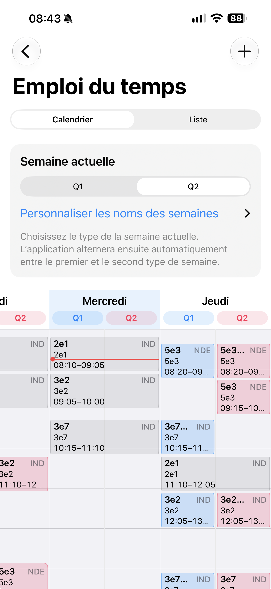

⏱️
Compte à rebours
Affichage compact ou plein écran pour voir immédiatement le temps restant avant la prochaine sonnerie.
Horaires de sonnerie, emploi du temps, compte à rebours, écran verrouillé et partage iCloud : tout ce qu’il faut pour garder le rythme de la journée.
Du prochain cours à l’emploi du temps complet, les informations utiles restent accessibles en un regard, sur iPhone comme sur l’écran verrouillé.


Passez instantanément de la vue Calendrier à la vue Liste. Le jour actuel est centré à l’ouverture, un repère rouge suit l’heure et la séance en cours, et les couleurs Q1/Q2 permettent d’identifier clairement la semaine active.
La vue Liste bénéficie du même suivi en temps réel, tandis que les formats 12 et 24 heures se règlent désormais directement depuis un sélecteur à deux choix.

Affichage compact ou plein écran pour voir immédiatement le temps restant avant la prochaine sonnerie.
Choisissez la vue Calendrier ou Liste, suivez la séance en cours et visualisez clairement l’alternance de vos semaines.
Suivez le décompte grâce au widget et à la Live Activity, avec prise en charge de la Dynamic Island.
Configurez jusqu’à quatre sites, du lundi au samedi. La détection du site le plus proche reste facultative et locale.
Partagez uniquement le nom et les sonneries d’un établissement. Sa position et votre emploi du temps restent privés.
Sauvegardez et restaurez votre configuration dans votre base iCloud privée, avec contenu chiffré.
Toutes les fonctionnalités de Sonnerie Prof sont disponibles gratuitement, sans abonnement. Si l’application vous est utile, vous pouvez soutenir son développement avec un pourboire facultatif. Aucun achat ne débloque de fonctionnalité.
Voir Sonnerie Prof sur l’App Store